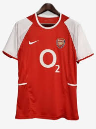
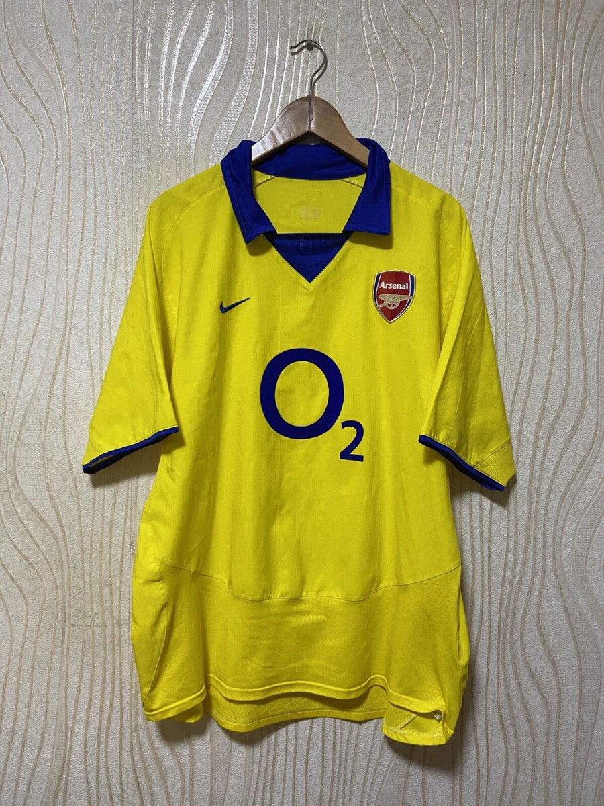
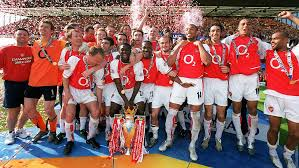

INVINCIBLE ARSENAL
fisrt section
second section
third section
fourth section
Welcome here we explore the invincible 2003/2004 Arsenal season.
This article is about the overall season. For more information about the Arsenal team that went unbeaten in the league from May 2003 to October 2004, see The Invincibles (English football) § Arsenal.
Arsenal FC
2003–04 season
| Chairperson | Peter Hill-Wood |
| Manager | Arsène Wenger |
| Stadium | Highbury |
| Premier League | Champions |
| FA Cup | Semi-finalist |
| League Cup | Semi-finals |
| Community Shield: | Runner-up |
| Champions League: | Quater-finalist |
| Top goalscorer League: | Thierry Henry (30 goals) |
| All | Thierry Henry (39 goals) |
| Highest home attendance | 38,184 vs Manchester United
(28 March 2004) |
| Lowest home attendance: | 27,451 vs Rotherham United
(28 October 2003) |
| Average home league attendance: | 38,078 |
Home colours
 | Away colours
 |
Arsenal squad of the season
Additional statistics
The Invincibles racked up 90 points from 38 games during the famous 2003/04 season, thanks to 28 wins and 12 draws. They scored 73 goals and only conceded 26, finishing 11 points ahead of second-placed Chelsea.

player contributions
Goalkeepers
Jens Lehmann
Role: First-choice goalkeeper throughout the league season.
Contribution: Played every Premier League match; provided leadership at the back, quick off his line, good at sweeping up behind the defence.
Key Strengths: Command of area, reflex saves, distribution.
Stuart Taylor
Role: Reserve goalkeeper.
Contribution: Rarely featured; mainly in cup competitions and as back-up if Lehmann was unavailable.
Rami Shaaban
Role: Third-choice goalkeeper.
Contribution: Did not play in the league; was a squad member providing depth.